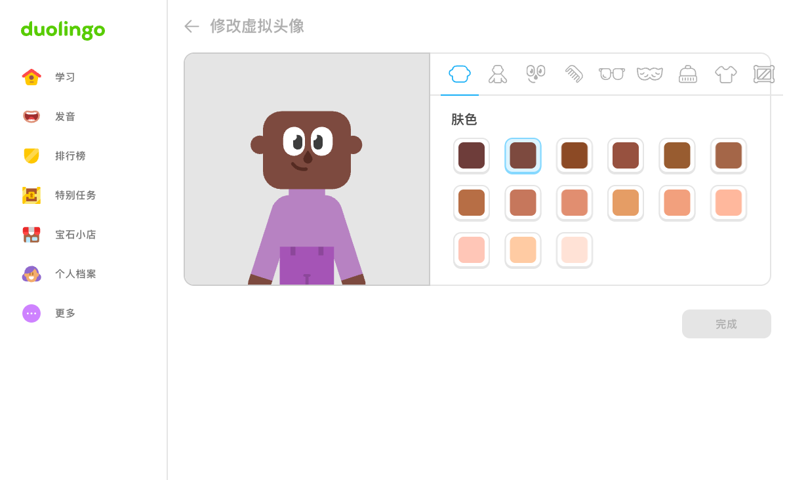
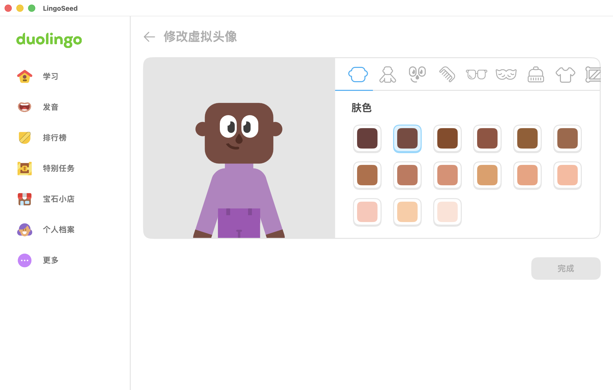

九分类、17组、282选项；不是282已测试项。七个下层分组实际选择/再访保留。原生八分类交互仍缺，身体入口真实失败。当前Rive预览及保存流程可运行，整图、音效和完整组合尚未1:1。


相同1200×732内容区域；仅展示，正式逐像素结果仍失败。原生窗口装饰按测得32点裁出显示；PNG文件未修改。
| 分类 | 真实分组 | DOM选项数 | 证据 |
|---|---|---|---|
| 1 | 肤色 | 15 | 原版 |
| 2 | 身体 | 6 | 原版 |
| 3 | 眼睛颜色、表情 | 70 | 原版 |
| 4 | 发色、发型 | 88 | 原版 |
| 5 | 眼镜颜色、眼镜、面部细节、耳环、鼻环 | 29 | 原版 |
| 6 | 胡须颜色、胡须 | 20 | 原版 |
| 7 | 头饰颜色、头饰 | 21 | 原版 |
| 8 | 衣服颜色 | 9 | 原版 |
| 9 | 背景颜色 | 24 | 原版 |
完整边界、负结果与复跑 · 分类失败 · 保存轨迹前端